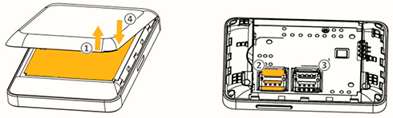
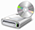
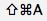
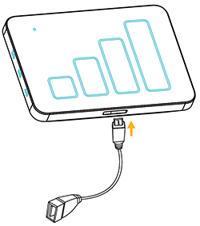
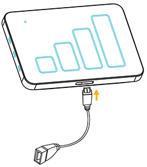
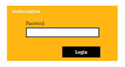
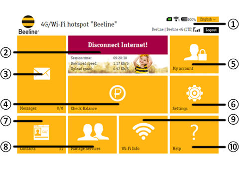
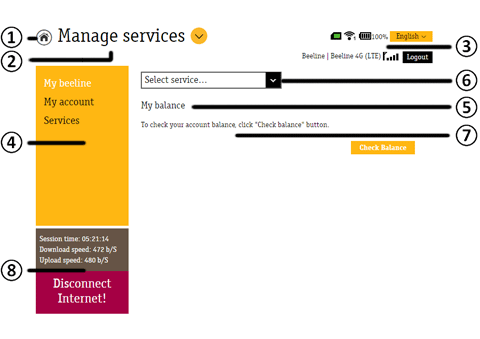

4G/Wi-Fi router Y900NB
User Guide
1 Device Information
1.1 Components
- Y900NB 4G/Wi-Fi router
- Battery
- USB 3.0 cable
- OTG cable
- DC Charger
- User Guide
- Warranty card
1.2 Specifications
- Communication standards: GSM 850/900/1800/1900 MHz, UMTS 900/2100 MHz, FDD LTE 800/1800/2600 MHz (B20, B3, B7);
CA: B3+B3, B7+B7, B3+B7, B3+B20, B7+B20. - Data transfer rate for LTE-Advanced technology is up to 300* Mbit/s when uploading and up to 50* Mbit/s when sending data.
- Data transfer rate for LTE technology is up to 150* Mbit/s when uploading and up to 50* Mbit/s when sending data.
- Data transfer rate for DC-HSPA + technology up to 42* Mbit/s when uploading data and up to 5.76* Mbit/s when sending data.
- Data transfer rate for EDGE technology up to 236.8* Kbp/s when uploading data and up to 118* Kbp/s when sending data.
- Support for Wi-Fi IEEE 802.11 a/b/g/n/ac, 5 GHz and 2.4 GHz ranges, data transfer rate up to 867** Mbit/s.
- Support for up to 32 simultaneous Wi-Fi devices.
- LED indicators.
- Support for memory cards - microSD, up to 32 GB.
- 3600 mAh battery.
- Micro-USB connector.
- Support for sending and receiving SMS.
- Supports USSD.
- Supports POWERBANK function. Output: 5.0V, 1000 mAh.
Router is initially configured to work with Beeline SIM cards.
* Specified speeds are the theoretical maximum. Actual speeds depend on the terrain of the area, the density of the surrounding buildings, congestion and cellular operator network configuration, rate plan preferences and other external factors.
** The specified speeds are the theoretical maximum speed for Wi-Fi IEEE 802.11ac. Actual speeds depend on the hardware settings, the terrain, the density of the surrounding buildings, the Wi-Fi configuration and other external factors.
Note: to increase the speed of data transmission and reception, as well as to improve the quality of the work of the router, it is recommended that the router be placed in the zone of maximum signal strength of the cellular network, for example, near a window.
2 4G/Wi-Fi router overview and control elements
2.1 Device overview

- Power LED indicator.
- 2G/3G/4G network indicators.
- Network signal indicators.
- MicroUSB 3.0 connector.
- Power button. Hold to power the device on and off. To reset the router to the factory default settings, simultaneously hold the power button and WPS button of the switched-on router down for 5 seconds.
- WPS Button. Press and hold to activate WPS.
2.2 LED indicators description
The following is a description of the main LED indicators.
| Name | LED status | Description |
| Network signal indicators | LED is off | No service |
| Solid blue from 1 to 4 bars | Dynamic graphical bar scale dispays current network signal level from 1 (weak) to 4 (strong) | |
| 2G/3G/4G network indicators | 2G, 3G or 4G solid blue | Registered in 2G,3G or 4G network |
| 2G, 3G or 4G blinking blue | Data transfer in 2G, 3G or 4G network | |
| All three indicators blinking blue simultaneously | No SIM, no Service, Invalid SIM card | |
| All LEDs is off | Network search or device is switched off |
| Name | Device status | LED status | Battery level |
| Power LED indicator | Connected via USB to PC or DC, no matter device turned ON or OFF | Blinking red | 0-20% |
| Blinking blue | 21-99% | ||
| Solid blue | 100% | ||
| Not connected via USB at all, device is turned ON | Solid red | 1-20% | |
| Solid blue | 21-100% | ||
| Not connected via USB at all, device is turned OFF | LED is off | Any | |
| WPS searching and pairing | Blink Red/Blue alternately | Any |
2.3 How to use the router
To install the router, please follow the steps below.
It will help you make sure that you have performed everything correctly.
It will help you make sure that you have performed everything correctly.
Preparation for work
Step 1. Installing the USIM card

- Remove back cover from 4G/Wi-Fi router, then remove battery, as shown on picture.
- Insert USIM card into 4G/Wi-Fi router. Ensure that the USIM card is correctly installed.
Attention:
the proper functioning of the router and the software is only guaranteed when using a Beeline USIM card. - If necessary, insert the SD memory card in the specified direction. Ensure that the SD card is fully and correctly installed.
Note:
the maximum supported capacity of the memory card is 32 GB. - Insert battery and close the cover of the 4G/Wi-Fi router.
Step 2. Powering the router on
Press the power button on the unit and hold it down until all LEDs will blink once.
Step 3. Connecting the router with other devices
Connection via USB cable
Connect the USB cable to the router, then plug the USB connector of the cable into any available USB port on your computer.
Note: it’s recommended to connect router into USB 3.0 port.
Note: it’s recommended to connect router into USB 3.0 port.
Connection via wireless Wi-Fi network
- Ensure sure that your 4G/Wi-Fi router is turned on.
- Search for available wireless networks on the device that you want to connect to the router.
Note:
the settings of the connected device must be set to obtain an IP address automatically. - In the wireless networks list, locate and then select the name of your network (SSID). The 4G/Wi-Fi router has the following file name format: Y900NB_XXXX (for WiFi 2.4 GHz) or Y900NB_XXXX_5G (for Wi-Fi 5 GHz), where XXXX is the unique set of numbers for each router. You can also verify the network name of your router under the back cover on the sticker.
- You will be asked to enter a key for your wireless network connection. You can find Wi-Fi key of your router under the back cover on the sticker.
- After you have successfully connected to the router, open the web browser on your device and enter the following in the address bar - http://192.168.8.1/ to access the web management interface of the 4G/Wi-Fi router.
Step 4. Installation of the software
If you are connecting to the 4G/Wi-Fi router via USB cable, you will need to install the software on your computer in order to access the web interface of the router.
Computers running on Microsoft ® Windows ® operating system
Installation of the software for your 4G/Wi-Fi router will start automatically, after you connect the router to your computer's USB port. Wait for the installation program to begin and follow the prompts. During installation, do not interrupt the connection of the router to the computer. If the automatic installation does not start, run the installation manually:
- Open the Computer window. To do this, double-click on the Computer icon on the desktop. If there is no Computer icon on the desktop, click the Start button in the lower left corner of the screen and find the Computer option in the pop-up menu.
- In the Computer window, open the Beeline drive. On some computers, due to the security settings, the name of the drive cannot be read. If in the Computer window there is no Beeline drive, open the newly appeared external drive (for example,  CD drive (E:)).
- In the window that opens, locate the AutoRun.exe and run it.
- 4. Follow the instructions of the installation program and do not plug out the router from the computer.
Computers running on Apple Mac OS X operating system
- Open the Beeline drive that appears when you connect the router to the computer and that is located among the icons on the desktop.
- If there is no Beeline drive on your desktop, press buttons on the keyboard  at the same time, and then on the left side of the newly opened window under Devices select the Beeline drive.
- In the window that opens, locate the Beeline setup file for the 4G Wi-Fi router and run it.
- Follow the instructions of the installation program and do not interrupt the connection of the router to the computer.
2.4 Charging the battery
The router battery can be recharged using both an AC charger as well as the USB-cable and your PC.
It is recommended that you use DC charger. To start charging, connect the charger to the router and a standard household AC power outlet (220 V, 50 Hz).
It is recommended that you use DC charger. To start charging, connect the charger to the router and a standard household AC power outlet (220 V, 50 Hz).
Note:
When a low charge is indicated, connect to the battery charger as soon as possible.
When a low charge is indicated, connect to the battery charger as soon as possible.
2.5 Charging of other devices
Below you can find description of charging other devices using POWERBANK function.

To start charging other device using POWERBANK function, do following steps:

To start charging other device using POWERBANK function, do following steps:
- Make sure, that router have enough battery level to use POWERBANK function.
- Plug in OTG cable into microUSB port of the router as shown on picture.
- Use USB cable of the other device which you want to charge, to connect it with OTG jack.
- After all is connected, make sure that charging process was started, using indicators of device which you are charging up now.
3 Web interface of the 4G/Wi-Fi router
3.1 Interface Description
Open the web interface of the 4G/Wi-Fi router. To do this, connect the PC to the router via USB or Wi-Fi.
Next, in the Windows OS, locate the icon on your desktop and double-click on it with the mouse, on a Mac you can find the icon in the Dock, and if you are connected via a mobile device such as a Smartphone or tablet, open your browser and enter http://192.168.8.1/.
Note: if the icon, for any reason, is not on the desktop or in the Dock of your computer, you can open the web interface by typing http://192.168.8.1/ in the Internet browser.
Next, in the Windows OS, locate the icon on your desktop and double-click on it with the mouse, on a Mac you can find the icon in the Dock, and if you are connected via a mobile device such as a Smartphone or tablet, open your browser and enter http://192.168.8.1/.
Note: if the icon, for any reason, is not on the desktop or in the Dock of your computer, you can open the web interface by typing http://192.168.8.1/ in the Internet browser.
Authorization, to access the 4G/Wi-Fi router settings, you will need to enter the password in the login page. The default password is admin.

Enter your password and click Log in.
Home page. Contains links to all the sections, as well as information about the current state of the router, network,
etc. From the homepage, you can establish a connection to the Internet, check your current balance and go into any of the sections of the web interface of 4G/Wi-Fi router management.

| No. | Name | Description |
| 1 | Status bar, language bar, Exit button | The status bar displays the current status of the USIM card, the current network type, the signal strength, the Wi-Fi network status, the battery level, and information about received SMS messages. The language bar enables you to quickly switch the interface language. The Exit button allows you to exit the web interface and return to the login page. |
| 2 | Connection tile | Allows you to connect to the Internet, as well as displays the current state of the connection and data transfer speed. If the Internet connection is not established, clicking on this icon will result in a connection being established. If the Internet connection is established, clicking on the icon will disable it. |
| 3 | Messages tile | Go to the Messages section in order to read, send and delete messages. The icon displays the last incoming message. |
| 4 | Check balance tile | Allows you to check the current status of your balance. |
| 5 | My Account tile | Provides access to My Account section, which allows you to input the password to access the management services on the https://my.beeline.ru/ portal. |
| 6 | Settings tile | Provides access to the Settings section for editing and modifying the current settings of the router. |
| 7 | Contacts tile | Provides access to your Contacts in order to view, add, edit and delete contacts. |
| 8 | Service Management tile | Provides access to the Service Management section in order to send USSD-commands that allow you to find out your number, check the status of your account, etc. |
| 9 | Wi-Fi Connections tile | Provides access to Wi-Fi Connections, which allows you to view the current list of devices connected to the router via Wi-Fi. |
| 10 | Help tile | Provides access to the Help section, which contains helpful reference information for the user. |
Internal pages. Internal pages are made according to a common template. Each page contains information and control elements in accordance with the section name.

| No. | Name | Description |
| 1 | Home button | Returns you back to the Home Page from any section or subsection. |
| 2 | Section header | Displays the name of the current main section, where you are located. When pressed, opens the menu, which allows you to navigate between the main sections of the web interface. |
| 3 | Status bar, language bar, Exit button | The status bar displays the current status of the USIM card, the current network type, the signal strength, the Wi-Fi network status, the battery level, and information about received SMS messages. The language bar enables you to quickly switch the interface language. The Exit button allows you to exit the web interface and return to the login page. |
| 4 | Section menu tile | Displays a menu of the current section. Allows you to navigate between the subsections of the current section. |
| 5 | Subsection header | Displays the name of the current subsection, where you are located. |
| 6 | Section sub-menu | Opens a sub-menu of the third level to navigate between the functions of the current subsection. |
| 7 | Contents of the subsection | Displays the contents of the current subsection. |
| 8 | Connection Status tile | Displays the current status of the Internet connection as well as the speed of data transmission and reception. |
3.2 Internet connection
Connecting to the Internet
- After web interface opened, internet connection will be established automatically (after some time). Tile color and connection status will be changed, if connection was successfully established.
- If connection was not established automatically, please, open web interface using your web browser, then press Connection tile. Yor PC will establish data connection in few seconds.
Note: you can disable auto connection mode. To do it, just uncheck Autoconnection checkbox. - In the address bar of the Internet browser, enter www.beeline.ru in the Address field.
If you see the Beeline homepage in your browser window, the connection was successful.
Note: if you are using the 4G/Wi-Fi router set for the first time, you must activate the starting balance before accessing the Internet for the first time.
You can activate initial balance with following methods:- You can activate initial balance by yourself on web page https://balance.beeline.ru. Else, if initial balance was not activated, then you will be redirected to https://balance.beeline.ru during first internet session.
- Initial balance activation pop up will be displayed automatically when router will be connected to PC. You will need then just click Activate button and initial balance will be activated to your account.
Disconnecting the Internet
To exit the Internet, click the Connect tile in the web interface of the Beeline 4G/Wi-Fi router, when the connection to the Internet is established.
3.3 Account, services and tariff management
You can pay for Internet access, check your balance, change your tariff and connect additional services in the Service Management section of the web interface.
Checking your balance
Your account will be debited for using the 4G/Wi-Fi router service on a monthly basis. The My Balance service will help you manage your expenses and monitor your web traffic balance.
- Open the web interface. Click on the Manage Services tile.
- Select the My Balance service in the drop-down menu and then click the Check balance button.
- Wait for the system to respond with the amount of funds on the account and the Internet traffic balance information.
Checking USIM card phone number
In order to pay for the Internet, the access to the online system of managing Beeline services, as well as to send SMS messages to your router, you need to know the phone number of the USIM card installed in the router.
- Open the web interface. Click on the Manage Services tile.
- Select the My Number service in the drop-down menu and then click Get my number.
- You will receive an SMS message with the phone number of your USIM card.
Top-up using Beeline recharge cards
Buy a Beeline payment card of any value (the same cards are used for paying for mobile communication services) and scratch off the protective layer.
- Open the web interface. Click on the Manage Services tile.
- Select the Top-Up service in the drop-down menu.
- Enter all the digits of the security code of the card (no spaces or dashes).
- Click Activate. Your router will receive an SMS message confirming that the activated amount was credited to your account.
Requesting payment from another subscriber
You can ask another Beeline subscriber to transfer funds to your account using a payment card, cash or
by transferring money from their account.
In order to ask another Beeline subscriber to top up your account, follow these steps:
In order to ask another Beeline subscriber to top up your account, follow these steps:
- Open the web interface. Click on the Manage Services tile.
- Select Give me money in the drop-down menu.
- In the next line, enter the number of the subscriber who you wish to request the funds from. The number should be dialed in the following format, without the number eight, for example: 9034124060.
- Enter the number and click Request.
- The subscriber who you are requesting the funds from will receive the following SMS message: "This subscriber sent you a request to top up their account". You will also receive a delivery receipt sent as an SMS message.
Attention: you can request funds from another subscriber no more than 5 times a day (a day is defined as the time interval from 12:00 am to 12:00 am, Moscow time).
Initial balance activation
You must activate initial balance on the USIM card before accessing the Internet for the first time.
Use the Initial Balance activation service to activate the starting balance:
Use the Initial Balance activation service to activate the starting balance:
- Open the web interface. Click on the Manage Services tile.
- Select the Initial Balance activation service in the drop-down menu.
- Click the Activate button and wait for the confirmation of the successful activation of the starting amount.
Account detailed information
You can obtain a detailed report on the used Internet traffic and sent SMS messages for the desired time period in the My Account section.
You will need your username and password to access the My Account section.
You will need your username and password to access the My Account section.
- Open the web interface. Click on the Manage Services tile.
- Select My Account in the menu and click Get Password.
- You will receive an SMS message with your username and password.
- Use the credentials to sign in to your Beeline Account at https://my.beeline.ru.
Attention: the prefix https:// in the URL is required. It ensures that you are accessing your data via a secure protocol.
Managing services and tariff
Use Services section to change your rate plan, activate or deactivate additional services. To change your rate plan or activate/deactivate a service:
- open the web interface and click on the Manage Services tile,
- select Services in the menu.
- Enter the USSD-command to change the rate plan or activate/deactivate services. For information about available rate plans, additional services, their description and activation/deactivation commands, please refer to www.modem.beeline.ru, Rates and Services sections.
- o Enter the USSD command and click Send.
4 Additional features
This section provides a brief description of additional features when using the 4G/Wi-Fi router.
4.1 SMS communication
To communicate with your friends, use the services that are available in the web interface of the Beeline 4G/Wi-Fi router, in the Communication section. To enter the Communication section, open the web interface and click on the Messages icon.
4.2 Contacts
If you often exchange SMS messages with certain people, save their numbers in Contacts. To enter the Contacts section, open the web interface and click on the Contacts tile.
4.3 Router settings
Configuration settings of your router can be found in the Settings section. Do not change them unless absolutely necessary. Before you modify them, please read the description of these parameters. To enter the Settings section, open the web interface and click on the Settings tile.
You can configure your Internet connection, network priority and access mode, and select a profile to connect to the Internet depending on the rate plan in the Network section. Be careful when changing the network configuration and connections. Do not modify the settings unnecessarily. Incorrect settings can result in the loss of the cellular network or may limit the services provided by the cellular network.
ATTENTION!
The 4G/Wi-Fi router is already configured for working in the Beeline network. Do not modify the settings for the connection profile unnecessarily. Incorrect connection profile settings may result in an inability to connect the router to the Internet.
The 4G/Wi-Fi router is already configured for working in the Beeline network. Do not modify the settings for the connection profile unnecessarily. Incorrect connection profile settings may result in an inability to connect the router to the Internet.
You can configure basic and advanced settings of the Wi-Fi network, as well as activate the WPS mode in the Wi-Fi section.
You can change the current password to access the web interface for router management, set your preferences for receiving SMS messages, reset the router to factory defaults, reboot the router, configure energy-saving settings, update router software and configure the PIN code of the USIM card in the Device section. Be careful and attentive when you enter the PIN and PUK codes. If you enter the PIN code incorrectly 3 times, your USIM card will be locked. To unlock the USIM card, you will need to enter the PUK code. If a PUK code is entered incorrectly more than 10 times, the USIM card will be fully locked, and you will not be able to use it. To replace the USIM card, you will need to contact the operator at their office.
Note:
if you have changed the settings of the router and no longer can access the web interface, or if you are unable to use any specific features of the router, you can reset the router to factory defaults. To reset the router to the factory default settings, simultaneously hold the power button and WPS button of the switched-on router down for 5 seconds.
Note:
if you have changed the settings of the router and no longer can access the web interface, or if you are unable to use any specific features of the router, you can reset the router to factory defaults. To reset the router to the factory default settings, simultaneously hold the power button and WPS button of the switched-on router down for 5 seconds.
You can configure the DMZ (demilitarized zone) function in the Firewall section.
You can change the current IP address of the router and subnet mask in the Router section. There you can also view the MAC address of the router and configure the DHCP server and other DHCP parameters.
You can view the current information about the network, Internet connection, as well as check the status of the SIM card and find out what the current version of the router software is in the Information section.
4.4 Detailed report on sent and received Internet traffic
Attention!
Information pertaining to the volume of transmitted/received data obtained by the Subscriber using the software is approximate and shall serve as reference only.
Billing for transmitted/received data through the use of the Service is carried out based on data of the administration and billing systems of the Operator, and the Subscriber shall pay for the services according to the accounts/invoices for the telecommunication Services. Please refer to the My Account at https://my.beeline.ru for detailed billing information.
Information pertaining to the volume of transmitted/received data obtained by the Subscriber using the software is approximate and shall serve as reference only.
Billing for transmitted/received data through the use of the Service is carried out based on data of the administration and billing systems of the Operator, and the Subscriber shall pay for the services according to the accounts/invoices for the telecommunication Services. Please refer to the My Account at https://my.beeline.ru for detailed billing information.
4.5 Modifying your Internet profile
The 4G/Wi-Fi router is already configured for working in the Beeline network. Do not modify the settings for the connection profile unnecessarily.
If you installed a USIM card with a rate plan that includes the connection to APN internet.beeline.ru on your router, you must change your Internet profile of Beeline Home at Beeline Internet in order to access the Internet. To do this, please follow these steps:
If you installed a USIM card with a rate plan that includes the connection to APN internet.beeline.ru on your router, you must change your Internet profile of Beeline Home at Beeline Internet in order to access the Internet. To do this, please follow these steps:
- Open the web interface. Click on Settings. Select Network, and then - Connection.
- Click on the Profile drop-down menu, select Beeline Internet and click Set as Ddfault.
- 3. To go online, go to the home page and click Connection tile.
Warning: modifying your profile is only possible when the Internet connection is off!
Security measures
Before use, please carefully read this chapter. The manufacturer is not liable for damages resulting from the use of this product that does not comply with the rules described in this user guide.
- Do not use the device while driving. The enabled device emits electromagnetic waves that can interfere with electronic vehicle systems, such as an anti-lock braking system (ABS) or inflatable air bags (Airbag). To avoid problems, we recommend that you:
- do not place the device on the dashboard and near airbags;
- find out from the supplier or manufacturer of the car, how well its electronic systems are protected from interference.
- Switch your device off before boarding an aircraft.
- Do not switch on the device on the premises of medical establishments, aside from specially designated places. Mobile devices, like many other household devices, may interfere with electrical and electronic devices or equipment that uses radio frequency.
- Disconnect the device if you are in the proximity of gas or flammable liquids. Strictly observe the rules for the use of wireless equipment, posted at fuel depots and petrol stations, chemical plants or elsewhere, where there is a risk of explosion.
- Make sure that the enabled device is located at a distance of at least 15 cm from medical devices (pacemakers, hearing aid, insulin injector, etc.).
- Do not allow children to use the device without adult supervision. The device may contain small parts that children could swallow, which can result in the risk of suffocation.
- Handle the device carefully and store it in a clean, dust-free place.
- Avoid exposure to adverse external conditions (moisture, rain, dust, spills, sea air, etc.).
- We recommend that you use the device at a temperature between -10 C and +50C and relative humidity from 10% to 80%.
- Do not attempt to open, disassemble, or repair the device by yourself.
- Do not throw or try to bend the device.
- Do not apply coloring matter to the device.
Rechargeable battery
Please note that your router is a solid integral device with replacable battery. Please observe the following precautions:
- do not attempt to disassemble the router,
- do not attempt to disassemble the battery
- do not drop the device and/or battery in a fire or with household waste and do not expose it to temperatures in excess of +60° C.
Please observe the applicable legislation in your country in terms of environmental protection.
 |
This symbol on your device, battery, and various types of accessories means that after you have stopped using them and want them to discard them, they need to be disposed of at special waste collection centers, such as:
Subsequently, this waste will be recycled, thus avoiding emissions of harmful substances into the environment, as well as for reuse of the materials contained in recycled devices.
|
For countries within the European Union
Electronic waste collection centers are available to all and are free of charge.
Any equipment marked with this symbol must be put into collection centers.
For countries outside the European Union
If in your country there are centers for collection and recycling of electronic waste, the equipment marked with this sign should not be discarded with the regular household waste, but instead should be taken to collection centers for further processing.
CAUTION: THERE IS A RISK OF EXPLOSION IF BATTERY IS REPLACED WITH AN INCORRECT BATTERY TYPE. DISPOSE OF USED BATTERIES ACCORDING TO THE INSTRUCTIONS.
Electronic waste collection centers are available to all and are free of charge.
Any equipment marked with this symbol must be put into collection centers.
For countries outside the European Union
If in your country there are centers for collection and recycling of electronic waste, the equipment marked with this sign should not be discarded with the regular household waste, but instead should be taken to collection centers for further processing.
CAUTION: THERE IS A RISK OF EXPLOSION IF BATTERY IS REPLACED WITH AN INCORRECT BATTERY TYPE. DISPOSE OF USED BATTERIES ACCORDING TO THE INSTRUCTIONS.
Certification
The data from the declarations of conformity are indicated in the certification card supplied.
Compliance with the WEEE Directive
This device complies with the essential requirements and other substantive provisions of the Directive on the disposal of waste for electrical and electronic equipment 2002/96/EU (WEEE).
Compliance with the RoHs Directive
This device complies with the 2002/95/EU Directive, which restricts the amount of certain hazardous substances contained in electrical and electronic equipment (RoHs Directives).
Electromagnetic radiation
A guarantee of compliance with the international standards (ICNIRP) and the European Directive 1999/5/EU (R&TTE) is a mandatory condition for market release of any mobile device model. The main requirement of these standards and guidelines is to protect the health and safety of consumers and the people around them.
THIS PRODUCT IS IN CONFORMITY WITH INTERNATIONAL STANDARDS GOVERNING THE LIMITS ON THE EFFECTS OF RADIO WAVES ON PEOPLE.
This mobile device is a transmitter and receiver of the radio signal. Its design prevents the device from exceeding the critical levels of exposure to radio waves (radio frequency electromagnetic fields), established by international guidelines. The standards were developed by the independent research organization (ICNIRP) in order to ensure the safety of all persons, regardless of age and health. The standards that define the acceptable level of exposure to radio waves utilize the term referred to as the specific absorption rate of electromagnetic energy (Specific Absorption Rate, or SAR). Mobile devices have a SAR limit of 2 W/kg. Tests for SAR measurement are conducted for standard working positions of the device, in which the radiation level of the device is at the highest certified level in all operating frequency bands.
Compliance with the WEEE Directive
This device complies with the essential requirements and other substantive provisions of the Directive on the disposal of waste for electrical and electronic equipment 2002/96/EU (WEEE).
Compliance with the RoHs Directive
This device complies with the 2002/95/EU Directive, which restricts the amount of certain hazardous substances contained in electrical and electronic equipment (RoHs Directives).
Electromagnetic radiation
A guarantee of compliance with the international standards (ICNIRP) and the European Directive 1999/5/EU (R&TTE) is a mandatory condition for market release of any mobile device model. The main requirement of these standards and guidelines is to protect the health and safety of consumers and the people around them.
THIS PRODUCT IS IN CONFORMITY WITH INTERNATIONAL STANDARDS GOVERNING THE LIMITS ON THE EFFECTS OF RADIO WAVES ON PEOPLE.
This mobile device is a transmitter and receiver of the radio signal. Its design prevents the device from exceeding the critical levels of exposure to radio waves (radio frequency electromagnetic fields), established by international guidelines. The standards were developed by the independent research organization (ICNIRP) in order to ensure the safety of all persons, regardless of age and health. The standards that define the acceptable level of exposure to radio waves utilize the term referred to as the specific absorption rate of electromagnetic energy (Specific Absorption Rate, or SAR). Mobile devices have a SAR limit of 2 W/kg. Tests for SAR measurement are conducted for standard working positions of the device, in which the radiation level of the device is at the highest certified level in all operating frequency bands.
| The maximum SAR value for this model and the conditions, under which it was registered: | ||
| When worn on the body | LTE 2600 MHz (B7) | 0.203 W/kg |
During use, the actual SAR value for the device is generally significantly lower than its maximum values. This is due to the fact that the device automatically selects the minimum power level adequate for a reliable network connection. The lower the power of the output device, the lower the SAR value.
Measurement of the SAR value while wearing a device on the body was conducted at a distance of 5 mm from the body. To ensure the required level of SAR, the device must be located at least 5 mm from your body.
If you use accessories that were not approved by the manufacturer, please make sure that they do not contain metal components and that they ensure the positioning of the device at the specified distance from the body.
The World Health Organization and the Food and Drug Administration of the United States stated that if users wish to reduce the level of exposure to radiation, it is recommended to keep the device away from the head and body during use, as well as reduce the total time of use of the device.
Further information on the impact of electromagnetic fields on the human body can be found at: http://www.who.int/peh-emf. This device complies with the essential requirements and other significant provisions of the Directive 1999/5/EU. The full text of the Declaration of conformity for this product can be found at the following website address: www.alcatelonetouch.com.
Warranty
The user must refer to the attached warranty document for more details on the conditions of the warranty and after-sales service.
Limitation of liability
PJSC VimpelCom and TCL Communication Ltd. do not accept responsibility for any loss of profit, indirect or actual damages, determined by the special circumstances of the case, incidental or consequential damages arising out of the use or in connection with the use of the device, regardless of whether PJSC VimpelCom and TCL Communication Ltd. were informed, knew or should have known of the possibility of such damages.
Images and icons used in this manual are the diagram pictures shown for illustrative purposes only. If they do not match the pictures on your device, please use the device-specific functions.
The information contained in this manual is subject to change without notice. Despite the measures taken to ensure the accuracy of the content of this document, all information contained herein, the statements and recommendations shall not be considered as a guarantee, explicit or implicit. In order to ensure proper and safe operation of your device, please carefully read the safety instructions described in this manual.
The manufacturer reserves the right to change any information, specifications and features without prior notice or obligation. The description provided in the user manual and the actual functions of the device may differ depending on the version of the software or the features offered by the service provider.
Images and icons used in this manual are the diagram pictures shown for illustrative purposes only. If they do not match the pictures on your device, please use the device-specific functions.
The information contained in this manual is subject to change without notice. Despite the measures taken to ensure the accuracy of the content of this document, all information contained herein, the statements and recommendations shall not be considered as a guarantee, explicit or implicit. In order to ensure proper and safe operation of your device, please carefully read the safety instructions described in this manual.
The manufacturer reserves the right to change any information, specifications and features without prior notice or obligation. The description provided in the user manual and the actual functions of the device may differ depending on the version of the software or the features offered by the service provider.
Legal information
Manufacturer information
Produced by TCL Communication Ltd.
Made in China.
The address of the manufacturer: 1910-12A, Tower 3, 33 Canton Road, Tsim Sha Tsui, Kovlun, Hong Kong City, China
Internet address: www.alcatelonetouch.com.
License information
ALCATEL is a trademark of Alcatel-Lucent and is used under license granted by TCL Communication Ltd.
All rights reserved. © 2015. TCL Communication Ltd.
The trademarks of Microsoft, Windows, and/or other Microsoft products referenced in these manual and on the packaging are either trademarks or registered trademarks of Microsoft.
Produced by TCL Communication Ltd.
Made in China.
The address of the manufacturer: 1910-12A, Tower 3, 33 Canton Road, Tsim Sha Tsui, Kovlun, Hong Kong City, China
Internet address: www.alcatelonetouch.com.
License information
ALCATEL is a trademark of Alcatel-Lucent and is used under license granted by TCL Communication Ltd.
All rights reserved. © 2015. TCL Communication Ltd.
The trademarks of Microsoft, Windows, and/or other Microsoft products referenced in these manual and on the packaging are either trademarks or registered trademarks of Microsoft.